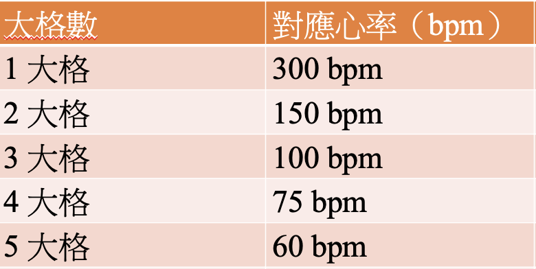

EKG
Saturday, February 08, 2025
4:43 PM
|
類型 |
導程名稱 |
|
肢體導程 (Limb Leads) |
I、II、III |
|
增強導程 (Augmented Leads) |
aVR、aVL、aVF |
|
胸前導程 (Precordial Leads) |
V1、V2、V3、V4、V5、V6 |
|
波形 |
代表意義 |
|
P 波 (P wave) |
心房去極化 |
|
QRS 波群 (QRS complex) |
心室去極化 |
|
T 波 (T wave) |
心室再極化 |

|
軸範圍 |
類型 |
可能的臨床意義 |
|
-30° 至 +90° |
正常電軸 (Normal Axis) |
正常 |
|
-30° 至 -90° |
左軸偏移 (LAD) |
LBBB, Ventricular Rhythm |
|
+90° 至 +180° |
右軸偏移 (RAD) |
RBBB, RVH |
|
+180° 以上 |
極端軸偏移 (Extreme Axis Deviation) |
可能與右心病變或心室心律異常有關 |
|
Lead I |
Lead II |
軸向 |
|
+ |
+ |
正常軸 |
|
+ |
- |
左軸偏移 |
|
- |
+ |
右軸偏移 |
|
- |
- |
極端偏移 |
Lead I + aVF 判讀更常用於精確角度估計，Lead I + II 為更快速篩查法來判斷整體心臟狀態。
|
模式 / 疾病 |
EKG 特徵 |
常見導程 |
臨床提示與備註 |
|
Acute MI - STEMI |
ST 升高 ≥1mm（2 個鄰近導程），可能有 Q 波 |
根據梗塞位置 |
STEMI 的導程區分見下方表格 |
|
NSTEMI / UA |
ST 段壓低 ± T 波倒置 |
V4–V6 常見 |
心肌酵素升高 → NSTEMI；酵素正常 → UA |
|
早期復極（Early Repol） |
凸型 ST 升高，無動態變化，T 波高大對稱 |
V2–V5 |
年輕男性常見，無病理 Q 波、無 reciprocal changes |
|
Brugada syndrome |
V1–V3 出現 coved 型 ST elevation（type 1） |
V1–V3 |
易致心室纖維顫動，需 ICD |
|
WPW syndrome |
短 PR 間期 + δ 波（上升緩慢的 QRS 起始） |
全導程可見 |
旁道傳導（Bundle of Kent） |
|
Pericarditis |
廣泛 ST elevation + PR 段壓低 |
全導程（除 aVR） |
無 reciprocal change，concave ST |
|
Hyperkalemia |
尖峰 T 波 → QRS 寬 → P 波消失 |
廣泛導程 |
嚴重時心搏停止 |
|
Hypokalemia |
扁平 T 波、U 波、QT 延長 |
V2–V4 明顯 |
常見於利尿劑使用後 |
|
Pulmonary Embolism |
S1Q3T3 pattern（S in I, Q in III, T inversion in III） |
I、III、V1–V3 |
伴 RBBB 或心動過速 |
|
LVH (左心室肥厚) |
S in V1 + R in V5/V6 > 35 mm |
V1, V5–V6 |
伴左軸偏移，ST-T 改變 |
|
RVH (右心室肥厚) |
R in V1 > 7 mm、右軸偏移 |
V1、V2 |
見於肺高壓、先心病 |
|
QT prolongation |
QTc > 440 ms（男）/ > 460 ms（女） |
全導程 |
可見於先天性 QT 延長症候群、抗心律不整藥、抗憂鬱藥、電解質異常（低鉀/低鎂） |
|
類別 |
疾病 / 原因 |
ST 波型特徵 |
導程分布 |
鑑別重點 |
|
Elevation |
STEMI (心肌梗塞) |
凸型 (convex) ST ↑，可能伴隨病理 Q 波 |
局部、相鄰導程（如 II/III/aVF） |
動態變化明顯，有 reciprocal change（對側 ST 壓低），症狀常劇烈 |
|
Elevation |
早期復極（Early repol） |
凹型 (concave) ST ↑，伴對稱高 T 波 |
前胸導程（V2–V5） |
常見於年輕運動員，姿勢、呼吸會影響 ECG 表現，無病理 Q 波，無 reciprocal change |
|
Elevation |
心包炎（Pericarditis） |
廣泛凹型 ST ↑，PR 段壓低 |
幾乎全導程，除 aVR/V1 |
通常有胸痛、摩擦音、PR 壓低；無 reciprocal change，胸痛常隨姿勢變化而變動 |
|
Elevation |
Brugada syndrome |
coved 型 ST ↑ + T 倒 |
V1–V3 |
Type 1 最具診斷價值；高風險猝死 |
|
Elevation |
左心室動脈瘤（Ventricular aneurysm） |
持續性 ST ↑（舊 MI 後） |
舊 MI 導程，如 V1–V4 |
通常無演變，合併 Q 波 |
|
Elevation |
高鉀血症（Hyperkalemia） |
ST ↑ 非主表現，常見高尖 T 波 + QRS 寬大 |
全導程 |
重度高鉀 → 心室停頓前徵象 |
|
類別 |
疾病 / 原因 |
ST 波型特徵 |
導程分布 |
鑑別重點 |
|
Depression |
心肌缺血（UA/NSTEMI） |
水平或下斜型 ST ↓ ± T 波倒置 |
局部導程（常 V4–V6） |
通常伴有胸痛、酵素升高（NSTEMI） |
|
Depression |
後壁梗塞（Posterior MI） |
V1–V3 ST 壓低，常伴 tall R 波 （可能會考喔） |
V1–V3 |
真正是後壁 ST elevation，只是鏡像反應 |
|
Depression |
數位毒性（Digoxin effect） |
下斜型 "scooped" ST ↓（Salvador Dali wave） |
廣泛導程，特別 V5–V6 |
檢查用藥史；低鉀時毒性加重 |
|
Depression |
低鉀血症（Hypokalemia） |
扁平 T 波 + U 波 ± ST ↓ |
前胸導程（V2–V4） |
常合併肌無力、心律不整 |
|
Depression |
腦出血、顱內壓升高（CNS event） |
弓形 ST ↓ + QT 延長 |
非典型導程 |
伴隨 Cushing reflex、意識改變，非冠狀動脈疾病 |
|
問題 |
優先考慮 |
|
ST elevation 有無 reciprocal ST depression？ |
有 ➝ STEMI；無 ➝ Early repol / Pericarditis |
|
ST elevation 為廣泛 vs 局部？ |
廣泛 ➝ Pericarditis；局部 ➝ STEMI |
|
ST depression 在 V1–V3？ |
➝ 考慮 Posterior MI |
|
伴高尖 T 波、QRS 寬？ |
➝ Hyperkalemia |
|
服用 Digoxin？ |
➝ 特徵性 ST scooping |
使用 OneNote 建立。